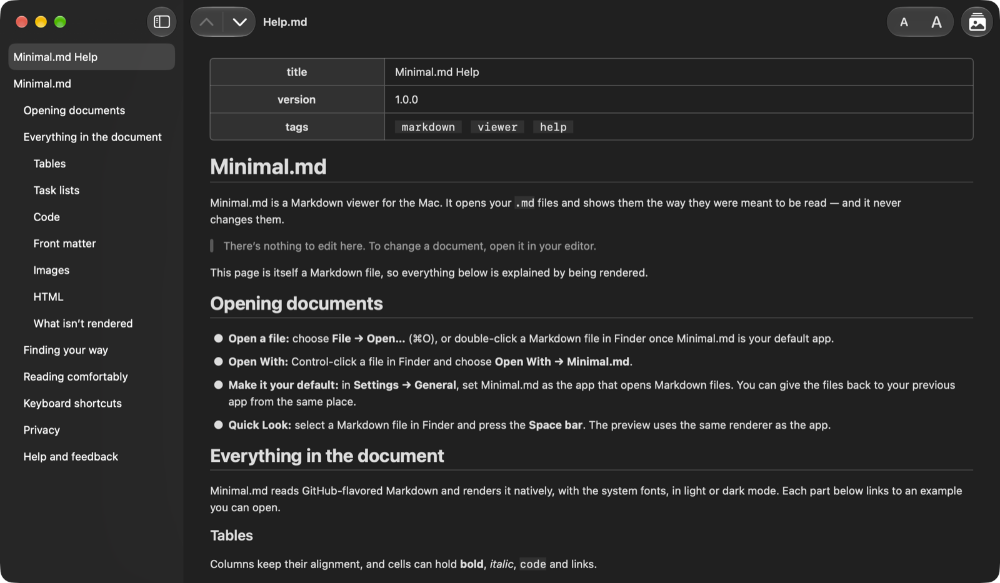

Markdown viewer & Quick Look
Open a Markdown file and just read it.
Minimal.md opens your .md files and shows them the way they were meant to be read — and it never changes them.
- Data not collected
- Works in Quick Look
- Multilingual

Features
No editor, no sync, no account.
Just the document, rendered natively with the system fonts, in light or dark mode.
Read, don't edit
Open Markdown from Finder or Open With, and make Minimal.md your default Markdown app. It never writes to your files. Copy the whole document as Markdown in one step.
Everything in the document
Tables, task lists, strikethrough and fenced code. Front matter as a tidy table. Local images and a safe subset of HTML. Anything it doesn't render is shown as its source.
Find your way
A table of contents in the sidebar, built from the headings. Jump to the previous or next heading. Links to headings scroll to them; links to other Markdown files open them.
Quick Look
Press the Space bar on a Markdown file in Finder to see it rendered — the same renderer as the app, right in the preview.
Made for the Mac
Adjustable text size. Look Up, Translate, Writing Tools and Services on selected text. Full VoiceOver support. English, French, German, Italian, Russian and Spanish.
Private by design
No network connections, no data collected, and remote images are never loaded. It reads only the files you open and the folders you share, and you can revoke access in Settings.
Screenshots
A closer look.
App Store labels
Privacy and accessibility.
Supported features on Mac
- VoiceOver
- Voice Control
- Dark Interface
- Differentiate Without Color Alone
- Sufficient Contrast
- Reduced Motion
Public beta
Try it before it ships.
Open your own READMEs, notes and docs, and tell us what looks wrong.